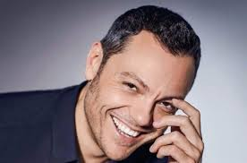

Biografia di Tiziano Ferro
 All'età di cinque anni ricevette come regalo di Natale la sua prima tastiera Bontempi: fu il primo approccio con la musica. Cominciò fin da piccolissimo a scrivere i primi brani, componendo le varie basi con mezzi molto semplici e incidendo mediante un registratore. Due di questi brevi brani, realizzati nel 1987 e intitolati Il cielo e Gli occhi, vennero successivamente inseriti come tracce fantasma nel terzo album in studio Nessuno è solo (2006).